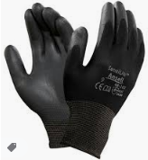
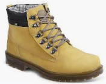
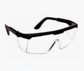
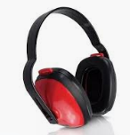
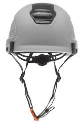

| Produto |
Descrição |
Preço |
Estoque |
|  |
LUVAS - A Luva de Segurança NITRIFLAT é tricotada em fio de poliamida
com revestimento antiderrapante em borracha nitrílica na palma,
face palmar dos dedos e pontas dos dedos, com punho elástico. |
R$ 49,99 |
17 |
|  |
BOTAS - Calçado ocupacional tipo bota, cor mostarda,
confeccionado em couro curtido ao cromo, fechamento em atacador,
forrado, palmilha de montagem em não tecido fixada pelo sistema strobel,
palmilha interna em EVA, solado de borracha , resistente ao óleo combustível. |
R$ 99,99 |
22 |
|  |
ÓCULOS - Óculos de segurança em policarbonato óptico,
com armação de nylon, hastes reguláveis e cordão de segurança.
Filtra 99,9% dos raios UVA/UVB. |
R$ 24,99 |
35 |
|  |
P. OURICULAR - Abafador Ruído Tipo Concha Protetor Auricular Ouvidos |
R$ 59,99 |
28 |
|  |
CAPACETES - Montana Focus Eletro Classe B Tipo III com Catraca CA 17098,
é ideal para a segurança do colaborador que desempenha atividades próximo
a redes elétricas, pois este capacete confeccionado em Polietileno de Alta Densidade (PEAD) |
R$ 99,99 |
13 |